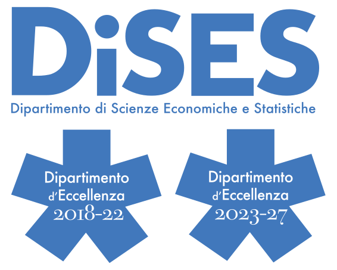
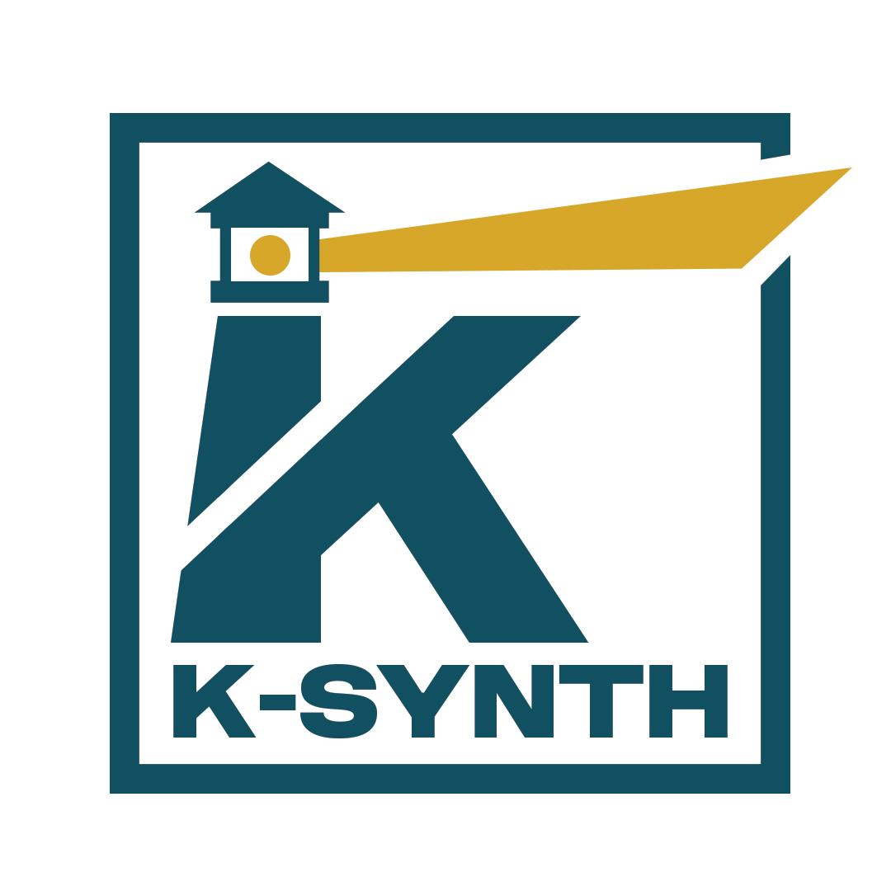
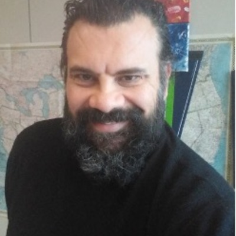
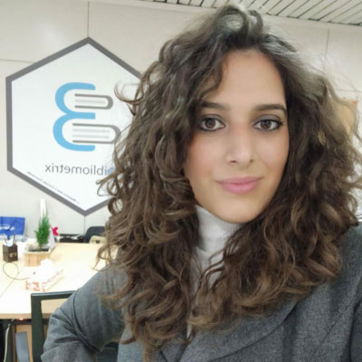

Organizzazione
Partners

DIPARTIMENTO DI SCIENZE ECONOMICHE E STATISTICHE
Il Dipartimento di Scienze Economiche e Statistiche (DiSES) dell’Università degli Studi di Napoli Federico II coordina le attività di ricerca e di formazione nell’area dell’economia teorica ed applicata, della finanza e delle discipline statistiche e quantitative. Ha ottenuto dal Ministero dell’Università e della Ricerca il riconoscimento come Dipartimento d’Eccellenza per i quinquenni 2018-2022 e 2023-2027.
Website: DiSES

K-SYNTH - BIBLIOMETRIX
K-Synth è uno spin-off accademico dell’Università degli Studi di Napoli Federico II. È specializzato nella ricerca, consulenza e produzione di “conoscenza”, estratta e analizzata da una pluralità eterogenea di grandi volumi di dati, attraverso modelli quantitativi, statistici e di scienza dei dati. Il suo prodotto principale è Bibliometrix. Sviluppato da Massimo Aria e Corrado Cuccurullo, Bibliometrix è tra gli strumenti open-source i principali software più utilizzati al mondo per il Science Mapping & Knowledge Synthesis.
Websites: K-Synth - Bibliometrix
Docenti

Massimo Aria
Professore Ordinario di Statistica Sociale
Dipartimento di Scienze Economiche e Statistiche
Università degli Studi di Napoli Federico II

Corrado Cuccurullo
Professore Ordinario di Economia Aziendale
Dipartimento di Scienze Economiche e Statistiche
Università degli Studi della Campania “Luigi Vanvitelli”

Walter Giordano
Professore Associato di Business English
Dipartimento di Scienze Economiche e Statistiche
Università degli Studi di Napoli Federico II

Michelangelo Misuraca
Professore Associato di Statistica Sociale
Dipartimento di Scienze Aziendali - Management & Innovation Systems/DISA-MIS
Università degli Studi di Salerno

Maria Spano
Ricercatore di Statistica Sociale
Dipartimento di Scienze Economiche e Statistiche
Università degli Studi di Napoli Federico II
Comitato Organizzatore
Coordinatrice: Prof.ssa Maria Spano

Luca D’Aniello
Ricercatore in Scienze Sociali e Statistiche
Università degli Studi di Napoli Federico II

Alessandra Belfiore
Ricercatrice in Economia Aziendale
Università Telematica Pegaso

Carlo Alabiso
Assegnista di ricerca
Università degli Studi di Napoli Federico II

Agostino Gnasso
Dottorando in Economia
Università degli Studi di Napoli Federico II

Dario Sacco
Dottorando
Università degli Studi di Napoli Federico II

Alessandra D’Alessio
Dottoranda
Università degli Studi di Napoli Federico II